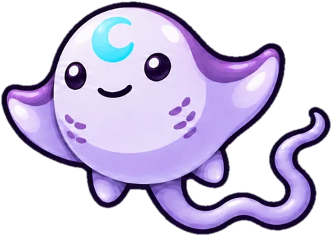

 Psychic
PsychicTap a stage to read its story.
Spectril is an adorable pale-lavender manta ray that drifts through the Ghost Hollow as though swimming in invisible water, its flat body gently undulating and a long slender tail curling behind it. Its large round eyes are set close together giving it a permanently friendly expression and it approaches newcomers directly, apparently unafraid. It passes through solid branches without disturbing them. Children in the Ghost Hollow keep one as a companion by sitting very still - Spectril will drift down and settle on a shoulder like a sleeping wish.
Field note: Spectril will drift right through a solid object if it decides the shortest path goes there - it simply does not register walls as obstacles.
Ghost Hollow. Spectril and its family are found in the Ghost Hollow. See everyone who lives there.
Share a Bond Food that matches its types to become friends. Spectril loves:
A Bond Food is not a trick. It joins your spirit with the Kimuro's spirit, and only when it chooses you.
Print the Kimuro adventure packs: mazes, cards, a board game and Bond Mark medals.
See the printable packs